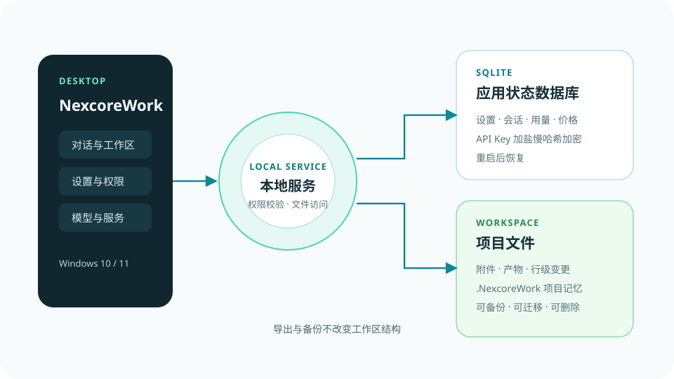
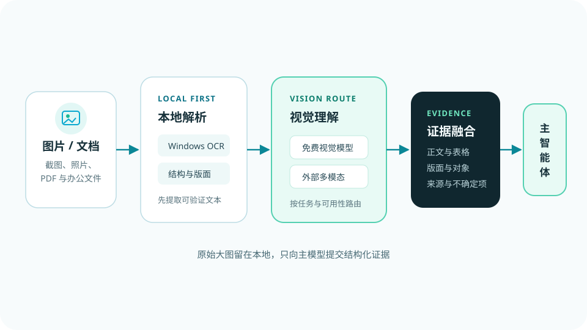
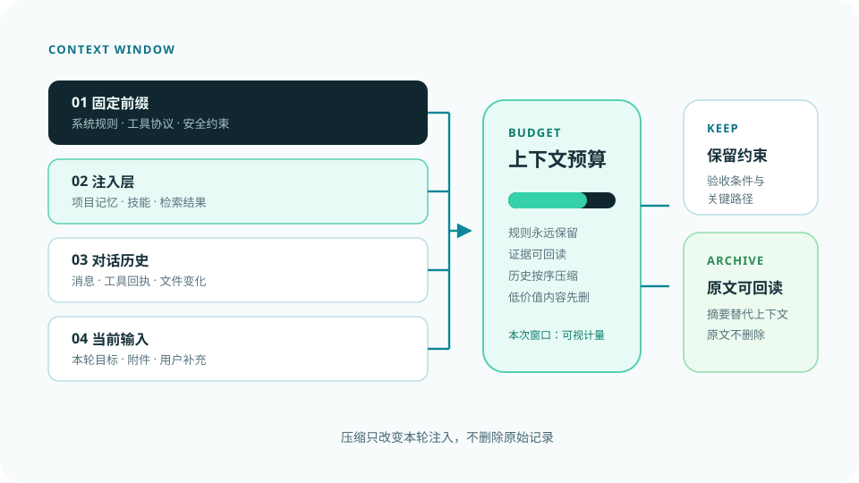
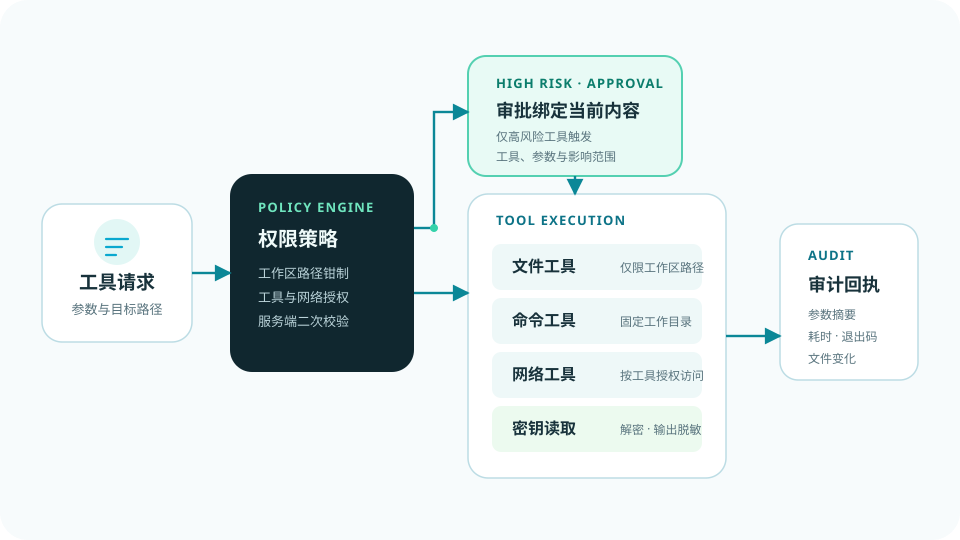

FIG. 01 / EXECUTION
执行不是一次生成，而是可恢复的闭环
规划器负责判断下一步，工具层负责执行，观察节点读取结果，证据与文件变化持续写回。交付门禁通过后才进入最终答复。
Next Core / 下一代智能内核
启核，寓意 Next Core。团队由软件工程方向学生组成，专注大模型 Agent、RAG 检索增强、 算法建模与软件系统开发，致力于把前沿 AI 技术转化为可验证、可交付的完整项目。
我们以严谨的数理思维构建智能系统，聚焦任务自动化调度、数据推理与工程落地， 致力于将前沿 AI 技术转化为可验证、可交付的完整项目。 团队擅长数学建模、代码实现与科研文档撰写，积极参与各类科创竞赛， 打磨技术方案，探索智能体的应用边界。
四条方向并非彼此独立的选题，而是同一条研发流水线上的不同环节： 模型负责理解与规划，检索负责事实供给，建模负责把问题写成方程，工程负责让它稳定运行。
从家庭资源、节庆竞技到本地智能体，六个项目都已拥有独立官网与可体验的成品。 三款新近发布的产品置顶展示，原有桌面、鸿蒙与安卓作品继续保留。
把任务写成清晰的输入、输出与评价指标，再决定用规则、检索还是模型解决。指标定不下来，就不进入调参。
固定随机种子、记录配置与数据版本，附上基线与消融。任何数字都要能由仓库里的脚本重新跑出来。
可运行的代码、可读的文档、可回退的方案，比一次漂亮的现场演示更有价值。
模型推导、数值实验与代码实现互相校验：推导给方向，实验给证据，代码给结论。
六张图对应六个容易含糊的工程问题：执行如何闭环、记忆如何续接、数据存在哪里、 图片怎样变成证据、上下文怎样压缩、工具权限怎样守住。每张图都可以继续读对应的架构文章。
规划器负责判断下一步，工具层负责执行，观察节点读取结果，证据与文件变化持续写回。交付门禁通过后才进入最终答复。

对话结论、工具事实与文件变化经过写入门控，保存到 .NexcoreWork；下一轮按项目、任务与时效重新召回。

设置、会话、用量与加密密钥进入本地数据库；附件、产物与项目记忆留在用户选定的目录，重启后仍可恢复。

本地 OCR 与结构提取先行，视觉模型补充场景理解，融合后的文字、版面与对象证据再进入文本模型。

系统规则、项目注入、对话历史与当前输入分开计量。超限时按优先级压缩，同时保留约束、证据和可回读原文。

文件、命令、网络与密钥读取分别受控。高风险操作需要审批，所有调用即使失败也会留下可审计回执。
收录团队在 Agent、检索、建模与工程实现中沉淀的技术笔记。任何人都可以投稿， 发布与删除需要校验码。
我们愿意承接算法建模、Agent 与检索系统方向的课题合作，也欢迎就技术方案本身交换意见。 源码、功能演示与交流入口都在下面。

删除后不可恢复。请输入校验码以继续。